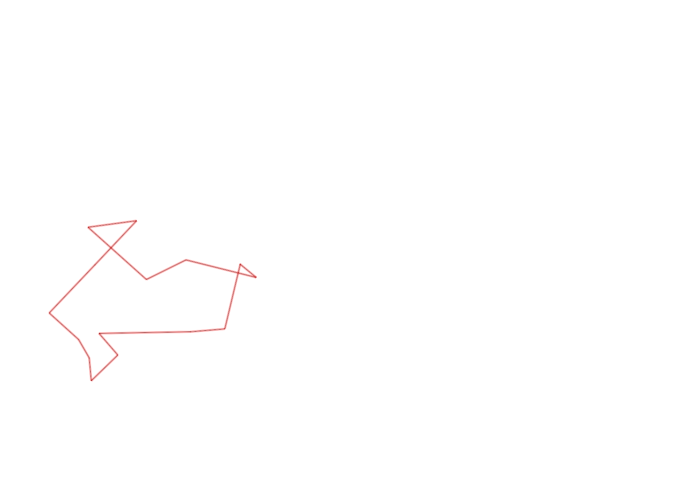
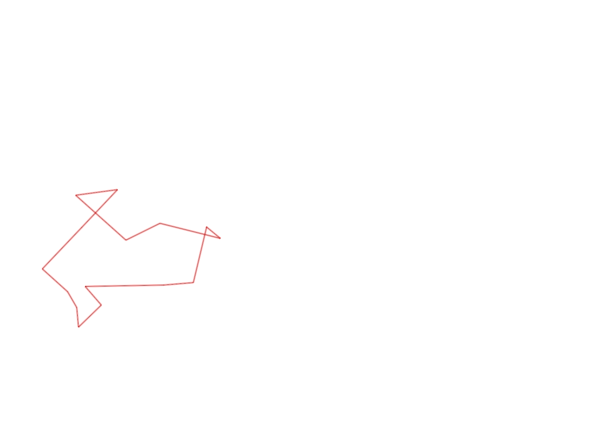

| Control |
Points |
Time Punched |
Distance |
Your Time |
Pace |
Place |
Fastest Time |
Median Time |
% Behind Fastest |
| 127 |
20 |
|
0.06 |
0:01:01 |
16:56 |
27 / 30 |
0:00:01 |
0:00:32 |
6000% |
| 126 |
20 |
|
0.22 |
0:05:19 |
24:10 |
3 / 3 |
0:01:29 |
0:01:46 |
258% |
| 130 |
30 |
|
0.14 |
0:01:32 |
10:57 |
18 / 19 |
0:00:00 |
0:00:33 |
-% |
| 32 |
30 |
|
0.24 |
0:04:54 |
20:25 |
2 / 2 |
0:01:27 |
0:03:10 |
237% |
| 63 |
60 |
|
0.15 |
0:02:11 |
14:33 |
24 / 25 |
0:01:05 |
0:01:29 |
101% |
| 44 |
40 |
|
0.19 |
0:04:26 |
23:20 |
2 / 2 |
0:01:30 |
0:02:58 |
195% |
| 53 |
50 |
|
0.2 |
0:03:37 |
18:05 |
21 / 26 |
0:01:31 |
0:02:15 |
138% |
| 69 |
60 |
|
0.12 |
0:03:12 |
26:40 |
29 / 29 |
0:00:45 |
0:01:18 |
326% |
| 71 |
70 |
|
0.06 |
0:04:56 |
1:22:13 |
25 / 25 |
0:00:48 |
0:01:13 |
516% |
| 40 |
40 |
|
0.07 |
0:05:15 |
1:15:00 |
8 / 9 |
0:00:40 |
0:01:52 |
687% |
| 41 |
40 |
|
0.11 |
0:05:15 |
47:43 |
20 / 20 |
0:00:28 |
0:01:07 |
1025% |
| 54 |
50 |
|
0.09 |
0:03:17 |
36:28 |
8 / 8 |
0:00:57 |
0:01:28 |
245% |
| 60 |
60 |
|
0.28 |
0:06:54 |
24:38 |
3 / 3 |
0:01:32 |
0:03:53 |
350% |
| 38 |
30 |
|
0.11 |
0:02:09 |
19:32 |
10 / 15 |
0:00:00 |
0:01:15 |
-% |
| Finish |
0 |
|
0.2 |
0:02:08 |
10:40 |
7 / 10 |
-1 day, 23:07:29 |
0:01:37 |
-99% |
Total Distance Covered: 2.24km
Points Scored: 600
Late Penalty: 0
Final Score: 600
Total Time: 0hours 56minutes 6seconds
Efficiency: 267.86 points/km
 
